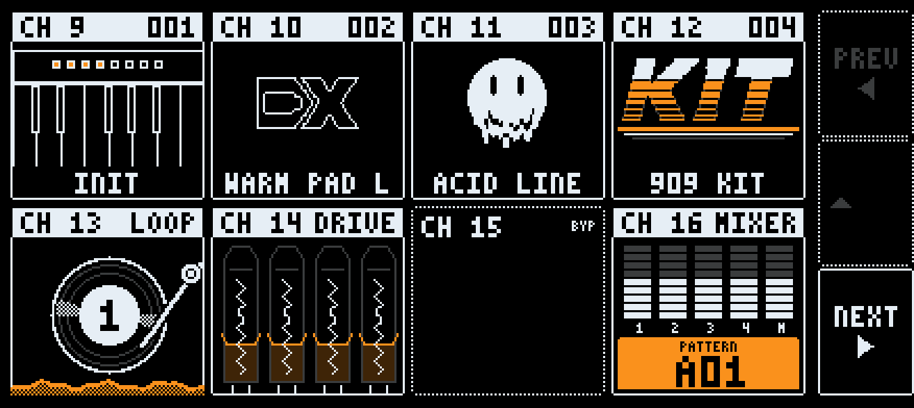

The main page

The main page shows the app's eight boxes. Tap a box to open it. Hold a box to switch it off or on.
| Box | What it is |
|---|---|
| Top row, 1 to 4 | The four parts, on channels 9 to 12. Each runs one synth or sampler. The header shows the channel and the sound number, and the name under the picture is the sound. See Parts and engines. |
| LOOP | The looper, on channel 13. See Looper. |
| DRIVE | Distortion, on channel 14. See DRIVE. |
| SPACE | Delay and reverb, on channel 15. See SPACE. |
| MIXER | The mixer, on channel 16, with the playing pattern under it. See Mixer. |